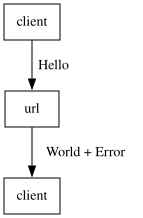
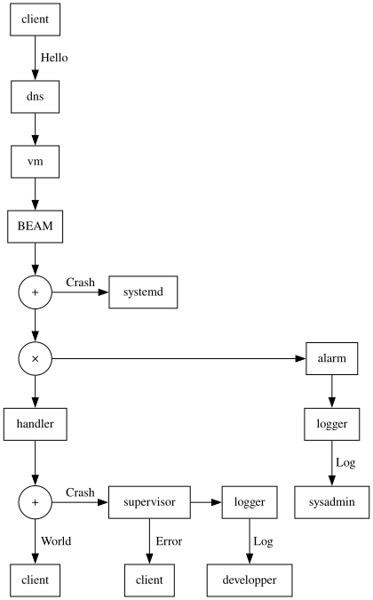
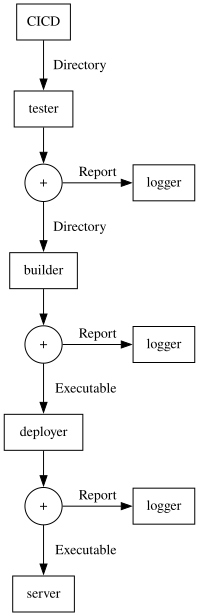

hello world!.
The objective is to build and deploy a manageable hello world
service using Elixir.
If a service satisfies the following properties, then: we say that the service is manageable.
- The source code is available here: GitHub.
- The service is manageable.
- By
Understandable
we mean being able to explain the computations using actor computations. - In order to simplify the presentation, we present the computations from a given point of view.
- A point of view on an object is the computation graph obtained w.r.t. a given actor. For instance, the client point of view or the programmer point of view.
- Depending on the point of view, the object we describe may give rise to different actor computations without contradicting themselves.
From the client point of view, the service takes the form of a URL. When the URL receives a Hello message, it should reply within 1 second with a World message or an Error message.

- A
Hellomessage is aPOSTHTTP request with a body equal to{"type": "Hello"}. - A
Worldmessage is aPOSTreply with a body equal to{"type": "World"}. - An
Errormessage is aPOSTreply with a body equal to{"type": "Error", "msg": reason}wherereasonis a string.
From the programmer point of view, many computations may occur:
The happy path. Nothing crashes, everything is fine. When the client sends a message to the service URL, DNS receives a message. Then, the VM receives a message. Then, the BEAM process on the VM receives the message. Then, the handler in the BEAM process receives the message and computes a reply. Finally, the client receives the reply.
The following cases are built by answering a question: What if such and such happens on
the happy path?
:
- The handler crashes. Then, the supervisor receives a notification that the handler crashed for some reason. Then, the client receives an excuse note for the inconvenience while the logger receives a detailed crash report. Finally, the developers receive a crash report.
- The BEAM crashes. Then,
systemdreceives a signal which triggers a restart of the BEAM process. - Clients cannot get enough of
hello world!
The alarm mechanism detects a surge of requests exceeding a threshold. Then, a notification is logged. Then, the developers are informed. - The VM crashes. and so on.
Using an actor computation graph, the following summary may be built:

For a sysadmin, the service is essentially a directory that gets transformed into a deployed web service. The computation graph may be:

Given that the execution is logged using the standard Elixir infrastructure and that additional production code crashes are logged as well, the programmer can compare crash reports and their understanding of the service which leads to a more efficient debugging process than if one of the above elements was missing. For instance, here is a crash report:
Considering the computation graph of the service, we say that it is reliable because:
- If handling of a request crashes, then: the service keeps running.
- If the service cannot keep up with the number of requests, then: an alarm is sent to operators to request more resources.
- If the service process crashes, then: systemd restarts the service process.
While not impossible, these properties make the service hard to crash.
We will consider the service performant if it can handle 10000 messages under 1 second on a mid level PC. To test the hypothesis, the following code may be run in a livebook:
Assuming the code is correct and performant, the service can still fail under the sheer number of
requests. In this case, adding more VMs becomes necessary to horizontally scale the service. The alarm
mechanism logs a notification so that a system administrator may add more VMs.
Additional actors should be added for the VMs to join seamlessly the system using standard Erlang mechanisms — e.g. epmd.
We use the term flexible
in the same way as described by Gerald Jay Sussman in the book:
Software Design for Flexibility.
An explanation is available on YouTube: Three Directions in Design. This
property is illustrated to some degree by how the computational graph has been built by adding more and more nodes and edges to
it.
Adding new protocols. Another way that flexibility is attained is by adding protocols to
existing actors. In effect, each actor may run arbitrary computations which means that it can learn
new
protocols. Pushing the idea to its limit, an actor may be taught protocols on the fly, provided it was
explained
to it appropriately. In the meantime, developers may add protocols to actors before
live-reloading actors giving a similar effect.
Adding new actors. For instance, we started by the happy path and then, for each new hypothesis — e.g. the handler crashes — we added communications and actors to deal with it — e.g. if the handler crashes, then: a supervisor is informed and restarts it. Everything else was preserved, and a new property to the system was added.
Securing the service has different meanings depending on the perspective adopted. From the client perspective, it
means that sending a Hello message to the address of the service results in the reception of
a World message in a timely manner or an error and nothing else. Given that the legitimate owner
controls the server, this property may be implemented using certificates — i.e. HTTPS for the client.
Adopting other perspectives, more properties should be added. For instance, it may be appropriate to add more properties to the service in order to avoid a Supply Chain Attack.
Implementing a tight systemd service specification should improve security by constraining how the process and the underlying OS interact — e.g. by constraining where the process can read/write in the filesystem.
Portability is achieved by using the release
mechanism of Elixir: Once a release is assembled, it can be packaged and deployed to a target, as long as the
target runs on the same operating system (OS) distribution and version as the machine running the mix release
command.
All references: